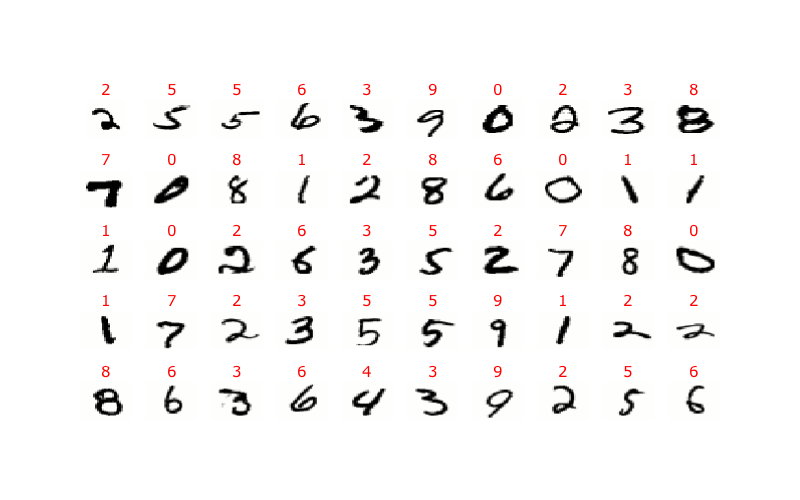

Project: Recognizing digits with k-NN¶
Project weight: 10 points
MNIST database¶
The MNIST database is a collection of 60,000 images of handwritten digits from 0 through 9, with numerical labels. Here is sample of images included in the database:
Objectives¶
Part 1. Write a function knn() which emplements the k-NN algorithm. This function should take four arguments:
training_data- a 2-dimensional numpy array whose each row is one element of the training data.training_labels- a 1-dimensional numpy array with labels of the training data: the \(k\)-th element of this array is the label corresponding to the \(k\)-th row oftraining_data.x- a 1-dimensional numpy array with a data point we want to classify.n- an integer specifying the number of neighbors to use for the classification.
The function should return a tuple (label, neighbors), where
labelis the predicted label of the pointxneighborsis a list of rows numbers oftraining_datawhich are the \(n\) nearest neighbors ofx.
Note. You need to implement the k-NN algorithm from scratch, using only Python and numpy. Do not use libraries which have this algorithm already implemented.
Part 2. Download MNIST files for this project:
The first file contains images of digits and the second the corresponding labels. The format of both files is described on the MNIST database website.
Investigate performance of the k-Nearest Neighbors algorithm in classification of images in the MNIST database, and describe your results.
Here are some questions which you may consider:
How does classification accuracy depend on the size of the training set and the number of neighbors?
Various ways of measuring distances between images, and their impact on classification.
You can consider a weighted k-NN algorithm: instead of just counting how many neighbors of a point have a given label, assign a weight to each neighbor depending on its distance from the data point being classified (smaller weights for more distant neighbors). Then classify the point depending on the sum of weights of neighbors with a given label. Does this improve the accuracy?
Analyze examples of images that have not been classified correctly. What went wrong with them? Which digits are confused most often with what other digits?
What fraction of images was correctly classified with perfect certainty, i.e. the images were classified correctly, and all their neighbors had the same label?
Were there any images for which no neighbor had the correct label? Or even all neighbors had the same but incorrect label?
Anything else you find interesting.